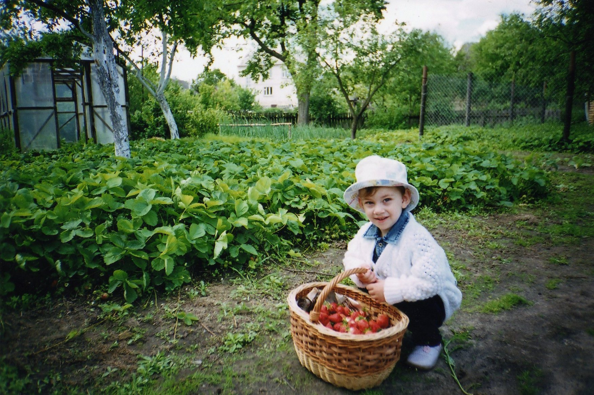

Всім привіт!
Мене звати Костянтин, на сьогоднішній день маю повних 19 років. Народився в місті Києві, та проживав разом із сім'єю наступні 4 роки в Димері Вишгородського району Київської області. Після 4-х років сім'я переїхала до села Придніпровського в Черкаській області. В цьому селі ходив до ЗОШ I-III ступенів, де здобув повну загальну середню освіту (11 класів). Я був активним учасником в житті школи починаючи з перших класів (співи, олімпіади і т.д.). З 9-го класу школа мені довіряла всю електроніку з якою працювала. В 10-му класі став головним лідером школи. Також в цьому році під час карантину ремонтував акустичну систему після "професіоналів"(сервіс в смт Чорнобай), які не змогли відремонтувати її тричі. В 2021 році склав ЗНО з англійської мови, математики, української мови та фізики. Також в цьому році вступив до Черкаського університету імені Богдана Хмельницького де навчаюся досі
